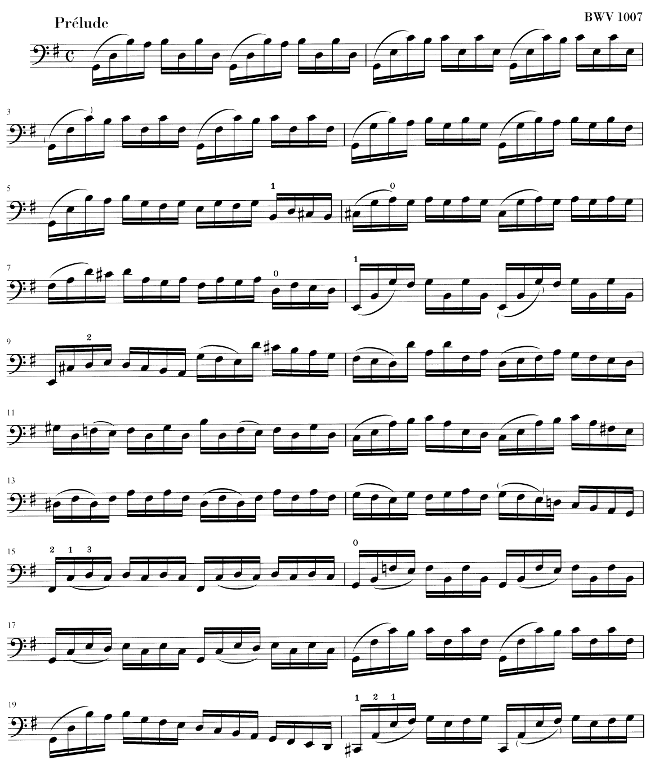
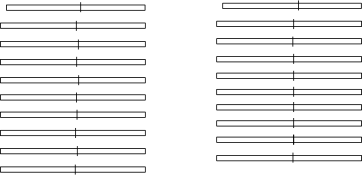
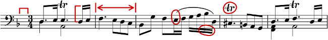
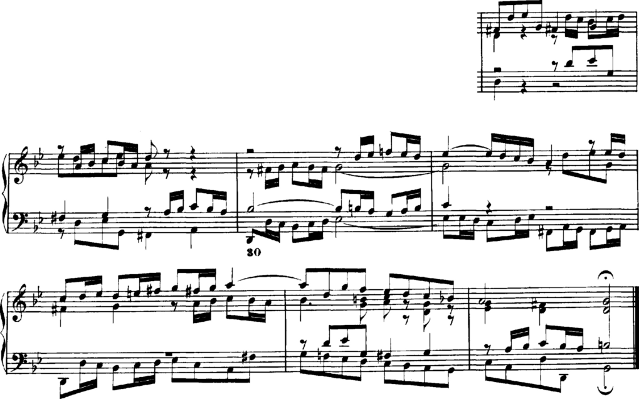

| [Inizio][Contenuti][Indice][ ? ] |
LilyPond — Saggio sull’incisione musicale automatizzata
|
Questo saggio tratta le funzioni di incisione musicale automatizzata nella versione di LilyPond 2.19.65. |
| 1. Incisione musicale | ||
| 2. Bibliografia | ||
| A. GNU Free Documentation License | Licenza di questo documento. | |
| B. Indice di LilyPond |
|
Questo manuale è disponibile in altri formati ed è integrato col resto della documentazione. Maggiori informazioni in Manuali. La documentazione completa si trova all’indirizzo http://lilypond.org/. |
| [ << Top ] | [Inizio][Contenuti][Indice][ ? ] | [ Bibliografia >> ] | ||
| [ < Top ] | [ Su : Top ] | [ Storia di LilyPond > ] | ||
1. Incisione musicale
In questo saggio spieghiamo le ragioni per cui LilyPond è stato creato e come fa a produrre spartiti così belli.
| 1.1 Storia di LilyPond | ||
| 1.2 Incisione in dettaglio | ||
| 1.3 Incisione automatizzata | ||
| 1.4 Costruzione del software | ||
| 1.5 Mettere LilyPond al lavoro | ||
| 1.6 Esempi di incisione (BWV 861) |
| [ << Incisione musicale ] | [Inizio][Contenuti][Indice][ ? ] | [ Bibliografia >> ] | ||
| [ < Incisione musicale ] | [ Su : Incisione musicale ] | [ Incisione in dettaglio > ] | ||
1.1 Storia di LilyPond
Molto tempo prima che LilyPond venisse adoperato per incidere gradevoli spartiti da leggere nelle esecuzioni, prima che ci si potessero creare dispense per i corsi universitari o perfino semplici melodie, prima ancora che esistessero una comunità di utenti sparsa in tutto il mondo o addirittura un saggio sull’incisione musicale, LilyPond ha preso vita con una domanda:
Perché la maggior parte degli spartiti generati da un software non riesce a raggiungere la bellezza e l’equilibrio di uno spartito inciso a mano?
Possiamo trovare alcune risposte esaminando i due spartiti qui sotto. Il primo è un bellissimo spartito inciso a mano nel 1950; il secondo è un’edizione moderna realizzata al computer.
Bärenreiter BA 320, ©1950:

Henle no. 666, ©2000:

Le note, prese dalla prima Suite di Bach per violoncello solo, sono identiche, ma il loro aspetto sulla pagina è diverso, specialmente se le stampate e le guardate da lontano. (La versione in PDF di questo manuale contiene immagini ad alta risoluzione adatte alla stampa.) Provate a leggerle o a suonarle da entrambe le edizioni e vi accorgerete che quella incisa a mano è più piacevole da usare. Possiede linee fluide e un certo movimento, e trasmette la sensazione di essere una musica viva e dotata di respiro, mentre la versione più recente appare fredda e meccanica.
È difficile accorgersi immediatamente di che cosa rende il secondo spartito diverso dal primo. Tutto sembra pulito e ordinato, forse anche “migliore” perché più computerizzato e uniforme. In verità, la cosa ci ha lasciati perplessi per un bel po’. Volevamo migliorare la notazione prodotta al computer, ma prima di tutto dovevamo capire che cosa c’era di sbagliato.
La risposta sta nell’uniformità perfetta, quasi matematica, dell’edizione moderna. Trovate le stanghette di battuta a metà di ciascun rigo: nello spartito inciso a mano la loro posizione varia naturalmente, mentre in quello più nuovo sono incolonnate quasi perfettamente. Lo mostriamo in questi schemi di impaginazione semplificati, ricavati dall’incisione tradizionale (a sinistra) e dall’edizione recente (a destra):

Nella seconda sono incolonnate anche le singole teste delle note, il che annulla il contorno della melodia, facendolo scomparire in una rigida griglia di simboli musicali.
Ci sono anche altre differenze: nell’edizione incisa a mano le linee verticali sono tutte più spesse, le legature si trovano più vicine alle teste delle note e si osserva una maggiore varietà nella pendenza delle travature. Anche se dettagli come questi possono sembrare pignoli, il risultato è una pagina di musica più facile da leggere. Nello spartito generato dal software, invece, i righi sono quasi identici, e se il musicista distoglie lo sguardo dalla pagina per un istante, si perderà.
LilyPond è stato progettato per risolvere i problemi che abbiamo riscontrato nei programmi in circolazione e per creare musica bella da vedere che imiti i migliori spartiti incisi a mano.
| [ << Incisione musicale ] | [Inizio][Contenuti][Indice][ ? ] | [ Bibliografia >> ] | ||
| [ < Storia di LilyPond ] | [ Su : Incisione musicale ] | [ Font musicali > ] | ||
1.2 Incisione in dettaglio
L’arte della tipografia musicale è chiamata incisione (su lastra), un termine che deriva dalla pratica della stampa musicale a mano.1 Solo pochi decenni fa, gli spartiti erano realizzati incidendo e punzonando la musica in modo speculare su una lastra di zinco o peltro. La lastra, poi, veniva inchiostrata e le depressioni prodotte da incisioni e punzonature trattenevano l’inchiostro. Imprimendo la carta sulla lastra, si produceva l’immagine della pagina. Punzonature e incisioni erano realizzate completamente a mano e correggere un errore era piuttosto laborioso, perciò l’incisione doveva essere praticamente perfetta al primo colpo. Saper incidere le lastre era una competenza che richiedeva un alto grado di specializzazione; un artigiano doveva sostenere quasi cinque anni di formazione prima di acquisire il titolo di maestro incisore, e per diventare veramente abile servivano altri cinque anni di esperienza.

LilyPond si ispira alle incisioni manuali tradizionali pubblicate per tutta la prima metà del XX secolo dalle principali case editrici musicali europee, tra cui Bärenreiter, Duhem, Durand, Hofmeister, Peters e Schott. Quei nomi e quel periodo storico sono talvolta considerati il culmine della pratica dell’incisione musicale artigianale. Avendo studiato queste edizioni, abbiamo imparato molto su come stanno le cose in uno spartito ben inciso e ne abbiamo individuato gli elementi da imitare con LilyPond.
| Font musicali | ||
| Spaziatura ottica | ||
| Tagli addizionali | ||
| Dimensionamento ottico | ||
| Perché lavorare così duramente? |
| [ << Incisione musicale ] | [Inizio][Contenuti][Indice][ ? ] | [ Bibliografia >> ] | ||
| [ < Incisione in dettaglio ] | [ Su : Incisione in dettaglio ] | [ Spaziatura ottica > ] | ||
Font musicali
Le immagini qui sotto mostrano alcune differenze tra un’incisione tradizionale e un tipico spartito prodotto dal computer. L’immagine a sinistra riproduce un bemolle preso da un’edizione Bärenreiter incisa a mano; quella a destra raffigura lo stesso segno ma preso da un’edizione della stessa musica pubblicata nel 2000. Nonostante che le due immagini siano stampate con la stessa tonalità d’inchiostro, la versione Bärenreiter sembra più scura: le linee del rigo sono più grosse e il bemolle appare audacemente arrotondato, quasi voluttuoso. Nell’immagine a destra, invece, le linee sono più sottili e il segno è piuttosto diritto e con spigoli vivi.
 |  | |
| Bärenreiter (1950) | Henle (2000) |
Quando abbiamo deciso di scrivere un programma per creare la tipografia musicale, non esistevano caratteri liberamente disponibili che corrispondessero all’eleganza delle nostre edizioni preferite. Per nulla scoraggiati, imperterriti abbiamo creato una collezione di simboli musicali basandoci sulle belle stampe degli spartiti incisi a mano. L’esperienza, poi, ha contribuito a sviluppare un certo gusto tipografico e ci ha permesso di apprezzare anche i sottili dettagli del design. Senza quest’esperienza, non avremmo potuto renderci conto di quanto brutti fossero i caratteri che avevamo ammirato all’inizio.
Di seguito ne esemplifichiamo due: la serie superiore è nel font predefinito del programma Sibelius (l’Opus); la serie inferiore, in quello di LilyPond.

I simboli di LilyPond sono più grossi e il loro peso è più coerente, il che li rende più facili da leggere. I tratti terminali sottili, come quelli alle due estremità della pausa di un quarto, non dovrebbero finire con punte taglienti, ma piuttosto con forme arrotondate, perché gli spigoli vivi delle matrici dei punzoni sono fragili e a forza di battere sul metallo si usurano rapidamente. Considerati insieme, nerezza del carattere, spessore delle linee, delle travature e delle legature devono essere ben amalgamati insieme per restituire un’impressione generale forte ma equilibrata.
Inoltre, notate che la testa della nostra semiminima non è ellittica, ma leggermente sagomata a diamante. Il gambo verticale del segno di bemolle è lievemente rastremato, allargandosi verso l’alto. I segni di diesis e bequadro si distinguono meglio da lontano perché le loro linee angolate presentano una pendenza diversa e i tratti verticali sono più grossi.
| [ << Incisione musicale ] | [Inizio][Contenuti][Indice][ ? ] | [ Bibliografia >> ] | ||
| [ < Font musicali ] | [ Su : Incisione in dettaglio ] | [ Tagli addizionali > ] | ||
Spaziatura ottica
Nella spaziatura della musica, la distribuzione dello spazio dovrebbe rispecchiare le durate fra le note. Tuttavia, come abbiamo visto prima nella suite di Bach, molti spartiti moderni aderiscono alle durate con precisione matematica, con scarsi risultati. Nel prossimo esempio, lo stesso motivo viene stampato due volte: la prima, usando l’esatta spaziatura matematica; la seconda, con le correzioni. Quale preferite?
![[image of music]](6c/lily-15c3b141.png)
![[image of music]](95/lily-184c0193.png)
Ciascuna misura contiene unicamente note da suonare in un ritmo costante, e gli spazi interposti dovrebbero riflettere questa situazione. Purtroppo, però, l’occhio ci inganna un po’: non solo esso rileva la distanza tra le teste delle note, ma tiene conto anche di quella tra gambi consecutivi. Di conseguenza, le note di una combinazione gambo in su/gambo in giù dovrebbero essere più distanti tra loro e quelle di una combinazione gambo in giù/gambo in su più vicine, il tutto a seconda di come si combinano le posizioni verticali delle note. Le due misure inferiori sono stampate con questa correzione; quelle superiori, tuttavia, contengono ammassi di note gambo in giù/gambo in su. Un maestro incisore avrebbe aggiustato la spaziatura come richiesto per compiacere l’occhio.
Gli algoritmi di spaziatura di LilyPond prendono in considerazione anche le stanghette. Perciò, l’ultimo gambo in su nell’esempio correttamente spaziato è stato allontanato ulteriormente dalla stanghetta finale per evitare troppe linee verticali vicine nella parte finale della misura. Un gambo in giù, invece, non avrebbe richiesto quest’accortezza.
| [ << Incisione musicale ] | [Inizio][Contenuti][Indice][ ? ] | [ Bibliografia >> ] | ||
| [ < Spaziatura ottica ] | [ Su : Incisione in dettaglio ] | [ Dimensionamento ottico > ] | ||
Tagli addizionali
I tagli addizionali presentano una sfida tipografica: rendono più difficile inserire il corretto spazio tra simboli musicali vicini e debbono essere abbastanza nitidi da permettere di identificare l’altezza della nota a colpo d’occhio. Nell’esempio qui sotto, vediamo come i tagli addizionali dovrebbero essere più spessi di una normale linea del rigo e che un incisore esperto li accorcerà per permettere di avvicinare le alterazioni alla testa della nota. Nell’incisione con LilyPond abbiamo incluso anche questa funzionalità.
 |  |
| [ << Incisione musicale ] | [Inizio][Contenuti][Indice][ ? ] | [ Bibliografia >> ] | ||
| [ < Tagli addizionali ] | [ Su : Incisione in dettaglio ] | [ Perché lavorare così duramente? > ] | ||
Dimensionamento ottico
Potrebbe essere necessario stampare la musica in una varietà di formati diversi. All’inizio, questo si poteva ottenere creando punzoni in ciascuno dei corpi richiesti, il che significa che ogni punzone era disegnato per dare il meglio di sé in quel particolare corpo. Con l’avvento dei font digitali, invece, una singola struttura può essere rimpicciolita o ingrandita in scala a piacimento, il che è molto comodo, ma nei corpi più piccoli i caratteri appariranno molto ‘leggeri’.
In LilyPond, abbiamo creato font in una serie di pesi corrispondenti a una gamma di corpi per la musica. La prossima è un’incisione di LilyPond in corpo 26:

e questa è la stessa incisione in corpo 11, poi ingrandita del 236% per riportarla alle stesse dimensioni dell’esempio precedente:

Nei corpi piccoli, LilyPond usa linee proporzionalmente più grosse in modo che la musica sia ancora ben leggibile.
Ciò permette anche che righi in corpi diversi coesistano pacificamente se usati insieme sulla stessa pagina:
| [ << Incisione musicale ] | [Inizio][Contenuti][Indice][ ? ] | [ Bibliografia >> ] | ||
| [ < Dimensionamento ottico ] | [ Su : Incisione in dettaglio ] | [ Incisione automatizzata > ] | ||
Perché lavorare così duramente?
Di solito, i musicisti sono presi più dall’eseguire la musica che dall’esaminarla così come appare sulla pagina, perciò i dettagli tipografici troppo cavillosi rischiano di passare per accademia. Ma non è così. Gli spartiti sono materiale da utilizzare praticamente: ogni cosa viene fatta per aiutare il musicista a migliorare il proprio rendimento, e tutto ciò che si rivela poco chiaro o poco piacevole da leggere diventa un ostacolo.
La musica incisa nel modo tradizionale impiega simboli neri su un rigo ‘pesante’ per creare un aspetto forte, ben bilanciato, chiaramente distinguibile quando è molto distante da chi deve leggerla: se messa su un leggio, per esempio. Un’attenta distribuzione degli spazi bianchi permette di disporre le note in modo molto serrato senza però affollare i simboli sul rigo. Il risultato riduce al minimo il numero delle voltate, con grande vantaggio per l’esecutore.
Questa è una caratteristica tipica della tipografia. L’aspetto della pagina dovrebbe essere bello, e non di per sé, ma soprattutto perché aiuta il lettore nel proprio compito. Per la musica stampata ciò è doppiamente importante, perché i musicisti reggono un carico di attenzione limitato: meno ne debbono impiegare per leggere la musica, più ne possono concentrare nell’eseguirla. In altre parole: migliore è la tipografia, migliori saranno le esecuzioni.
Questi esempi dimostrano che la tipografia musicale è un’arte raffinata e complessa, la cui messa in pratica richiede notevoli competenze di solito non possedute dai musicisti. LilyPond costituisce il nostro sforzo per importare l’eccellenza grafica della musica incisa a mano nell’era informatica e renderla disponibile a qualunque musicista. Abbiamo sintonizzato i nostri algoritmi, i disegni dei font e le impostazioni del programma per produrre stampe corrispondenti alla qualità delle vecchie edizioni che amiamo osservare e suonare.
| [ << Incisione musicale ] | [Inizio][Contenuti][Indice][ ? ] | [ Bibliografia >> ] | ||
| [ < Perché lavorare così duramente? ] | [ Su : Incisione musicale ] | [ Concorsi di bellezza > ] | ||
1.3 Incisione automatizzata
Qui descriviamo ciò che serve per creare un software in grado di simulare l’aspetto degli spartiti incisi: un metodo di descrizione della buona formattazione al computer e numerosi confronti dettagliati con incisioni effettivamente esistenti.
| Concorsi di bellezza | ||
| Miglioramento per analisi comparativa | ||
| Mettere le cose a posto |
| [ << Incisione musicale ] | [Inizio][Contenuti][Indice][ ? ] | [ Bibliografia >> ] | ||
| [ < Incisione automatizzata ] | [ Su : Incisione automatizzata ] | [ Miglioramento per analisi comparativa > ] | ||
Concorsi di bellezza
In che modo noi decidiamo veramente sulla formattazione? In altre parole: quale delle tre configurazioni seguenti dovremmo scegliere per avere la legatura migliore?
![[image of music]](b8/lily-0179c477.png)
Esistono pochi libri sull’arte di incidere la musica, i quali, purtroppo, si limitano a fornire alcune semplici regole generali e qualche esempio. Da esse si può imparare qualcosa, ma sempre troppo poco per mettere a punto un algoritmo implementabile senza troppa fatica in un computer: seguendole, le eccezioni da codificare a mano sarebbero ancora troppe. Analizzare tutti questi casi è un lavoro enorme, e spesso nemmeno tutti vengono contemplati:

(Fonte: Ted Ross, The Art of Music Engraving)
Anziché cercare di scrivere regole di formattazione dettagliate per ogni situazione possibile, dobbiamo solo descrivere gli obiettivi in modo sufficientemente completo da permettere a LilyPond di giudicare da solo l’attrattiva delle diverse possibilità. Poi, per ogni configurazione calcoliamo un punteggio di bruttezza e scegliamo quella meno brutta.
Per esempio, qui sotto mostriamo tre possibilità per una legatura, a ciascuna delle quali LilyPond ha assegnato un punteggio in ‘punti di bruttezza’. Il primo esempio ottiene 15,39 punti perché la legatura attraversa una delle teste delle note:
![[image of music]](5d/lily-afb29edc.png)
Il secondo è più bello, ma la legatura non comincia o finisce sulle teste delle note. Ottiene 1,71 punti a sinistra e 9,37 punti a destra, più altri 2 punti a causa del fatto che la legatura ascende mentre la melodia discende, per un totale di 13,08 punti di bruttezza:
![[image of music]](8a/lily-1a506dd8.png)
La legatura finale ottiene 10,04 punti per il vuoto a destra e 2 punti per la pendenza verso l’alto, ma è la più attraente delle tre configurazioni, e così LilyPond sceglie questa:
![[image of music]](83/lily-7d0e74a1.png)
Questa tecnica è del tutto generale e viene adoperata per prendere decisioni ottimali in merito alla configurazione dei gambi delle note, delle legature di valore e dei punti negli accordi, nelle interruzioni di rigo e di pagina. Si può giudicare la bontà di queste decisioni confrontandole con incisioni effettivamente esistenti.
| [ << Incisione musicale ] | [Inizio][Contenuti][Indice][ ? ] | [ Bibliografia >> ] | ||
| [ < Concorsi di bellezza ] | [ Su : Incisione automatizzata ] | [ Mettere le cose a posto > ] | ||
Miglioramento per analisi comparativa
Gli spartiti generati da LilyPond sono migliorati gradualmente nel tempo e continuano a migliorare grazie al confronto con quelli incisi a mano.
Per esempio, qui sotto si vede una riga di un brano di riferimento preso da un’edizione incisa (Bärenreiter BA320):

e qui la stessa citazione realizzata con una vecchissima versione di LilyPond (versione 1.4, maggio 2001):

La musica prodotta da LilyPond 1.4 è senza dubbio leggibile, ma un confronto serrato con lo spartito precedente ha mostrato numerosi errori nei dettagli di formattazione:
- c’è troppo spazio prima dell’indicazione di tempo
- i gambi delle note con travature sono troppo lunghi
- la seconda e la quarta misura sono troppo strette
- la legatura ha un aspetto imbarazzante
- le indicazioni di trillo sono troppo grandi
- i gambi sono troppo sottili
(Mancavano anche due teste di note, alcune indicazioni editoriali e c’era un’altezza errata!)
Aggiustando le regole di formattazione e il disegno del font, lo spartito è notevolmente migliorato. Confrontate lo stesso spartito di riferimento e quello prodotto con la versione corrente di LilyPond (2.19.65):
![[image of music]](64/lily-9356cf70.png)
Non è certo un clone dell’edizione di riferimento, ma è comunque molto più vicino a una qualità editoriale rispetto alla versione precedente.
| [ << Incisione musicale ] | [Inizio][Contenuti][Indice][ ? ] | [ Bibliografia >> ] | ||
| [ < Miglioramento per analisi comparativa ] | [ Su : Incisione automatizzata ] | [ Costruzione del software > ] | ||
Mettere le cose a posto
Siamo in grado di misurare l’abilità di LilyPond nel prendere decisioni sull’incisione della musica anche confrontando il suo prodotto con quello di un software commerciale. In questo caso abbiamo scelto Finale 2008, uno dei programmi di notazione musicale a pagamento più diffusi, in particolare nel Nord America. Sibelius è il suo più acerrimo rivale e sembra andare particolarmente bene nel mercato europeo.
Per il nostro confronto, abbiamo selezionato la Fuga in sol minore dal Libro I del Clavicembalo ben temperato BWV 861 di Bach, il cui soggetto d’apertura è
![[image of music]](0e/lily-96550f49.png)
Abbiamo inciso le ultime sette misure del brano (n. 28–34) con Finale e con LilyPond. In questo punto della composizione, il soggetto ritorna in uno stretto a tre parti e conduce alla sezione finale. Abbiamo resistito alla tentazione di apportare qualunque modifica al prodotto predefinito di Finale, perché stiamo cercando di mostrare che cosa ciascun software riesce a fare da solo, senza interventi umani. Le uniche modifiche di rilievo introdotte sono state aggiustare le dimensioni della pagina per adattarla a quelle di questo saggio e forzare la musica in due soli sistemi per rendere più agevole il confronto. Per impostazione predefinita, invece, Finale avrebbe inciso due sistemi di tre misure ciascuno e un terzo sistema contenente la sola misura finale larga tutta la riga.
Molte delle differenze tra le due versioni si concentrano nelle misure 28–29, come mostriamo qui di seguito (Finale sta sopra):

![[image of music]](b8/lily-f3c74e65.png)
Tra le carenze nell’output non modificato di Finale segnaliamo quanto segue.
- La maggior parte delle travature è troppo lontana dal rigo. Una travatura che punta verso il centro del rigo dovrebbe essere lunga circa un’ottava, ma gli incisori la abbreviano quando nella musica a più voci punta in senso contrario. Il sistema di travature di Finale può essere facilmente migliorato con il suo plug-in Patterson Beam, ma qui abbiamo scelto di omettere questa funzionalità.
- Finale non regola le posizioni delle teste delle note quando queste
vengono a trovarsi troppo vicine, il che rende la musica estremamente
difficile da leggere se voce superiore e inferiore invertono
temporaneamente la posizione:
![[image of music]](7e/lily-f39b518d.png)
- Finale ha messo tutte le pause alla stessa altezza sul rigo. L’utente è libero di regolarle secondo la propria necessità, ma in nessun modo il programma tenta di prendere in considerazione il contenuto dell’altra voce. Il caso ha voluto che in quest’esempio non si verificassero vere e proprie collisioni tra note e pause, ma la cosa ha a che fare più con la posizione delle note che con quella delle pause. In altre parole, Bach merita più considerazione per evitare una collisione completa di quanta non gliene riservi Finale.
Con il confronto appena operato non intendiamo affatto suggerire che Finale non possa essere adoperato per produrre spartiti di qualità editoriale. Tutto il contrario: nelle mani di un utente esperto può farlo e in effetti lo fa, ma richiede abilità e tempo. Una delle differenze fondamentali tra LilyPond e i programmi di notazione musicale commerciali è che il primo spera di ridurre gli interventi umani al minimo, mentre gli altri puntano a fornire un’interfaccia attraente in cui operare questo tipo di modifiche.
Particolarmente eclatante è l’omissione da parte di Finale di un un bemolle a misura 33:

Il bemolle è richiesto per annullare il bequadro presente poco prima nella stessa misura, ma Finale l’ha tralasciato perché appartenente a un’altra voce. Così, oltre ad attivare il plug-in per le travature e a controllare la spaziatura delle teste delle note e delle pause, l’utente deve controllare anche gli accidenti nelle voci che si incrociano per scongiurare che errori di questo tipo facciano interrompere una prova.
Se vi interessa esaminare questi esempi più nel dettaglio, alla fine del saggio potete trovare l’estratto completo di sette misure insieme ad altre quattro incisioni pubblicate. Un attento esame dei frammenti rivela che tra le incisioni manuali esiste una certo intervallo di variazione tollerabile, ma anche che LilyPond regge il confronto abbastanza bene. L’output di LilyPond non è ancora privo di difetti, per esempio appare un po’ troppo aggressivo nell’accorciare i gambi, il che permette ancora un certo margine di manovra per sviluppi e messe a punto successive.
Naturalmente, la tipografia si basa sul giudizio di una forma da parte dell’uomo, il che rende le persone ancora insostituibili. Tuttavia si può automatizzare gran parte del lavoro noioso, e se LilyPond riesce a risolvere correttamente la maggior parte delle situazioni frequenti, il miglioramento rispetto al software in circolazione sarà enorme. Via via che gli anni passano, il programma può essere perfezionato per eseguire automaticamente un numero sempre più elevato di operazioni, così da rendere le sovrascritture manuali sempre meno indispensabili. Dove queste si rivelassero indispensabili, la struttura di LilyPond è stata progettata avendo in mente la flessibilità.
| [ << Incisione musicale ] | [Inizio][Contenuti][Indice][ ? ] | [ Bibliografia >> ] | ||
| [ < Mettere le cose a posto ] | [ Su : Incisione musicale ] | [ Rappresentazione della musica > ] | ||
1.4 Costruzione del software
Questa sezione descrive alcune decisioni di programmazione prese durante la progettazione di LilyPond.
| Rappresentazione della musica | ||
| Quali simboli incidere? | ||
| Architettura flessibile |
| [ << Incisione musicale ] | [Inizio][Contenuti][Indice][ ? ] | [ Bibliografia >> ] | ||
| [ < Costruzione del software ] | [ Su : Costruzione del software ] | [ Quali simboli incidere? > ] | ||
Rappresentazione della musica
Idealmente, il formato di input per qualsiasi sistema di formattazione ad alto livello consiste in una descrizione astratta del contenuto da formattare, che nel nostro caso è la musica stessa. La questione solleva un problema formidabile: in che modo possiamo definire che cos’è davvero la musica? Anziché tentare di trovare una risposta, abbiamo rovesciato la domanda. Scriviamo un programma in grado di produrre spartiti e rendiamone il formato il più snello possibile: quando non potremo ridurlo ulteriormente, ci ritroveremo per definizione con il contenuto in sé. Il nostro programma, dunque, serve a definire la forma di un contenuto musicale.
Anche la sintassi è un aspetto dell’interfaccia utente di LilyPond, quindi è semplice da scrivere:
{
c'4 d'8
}
crea un do centrale da un quarto (C1) e un re da un’ottavo immediatamente sopra il do centrale (D1).
![[image of music]](7f/lily-00c5b815.png)
A scala microscopica, una sintassi simile si adopera facilmente. A una scala più larga, però, anche la sintassi ha bisogno di una struttura. In quale altro modo, altrimenti, sarebbe possibile scrivere brani complessi come sinfonie e opere liriche? La struttura è formata dal concetto di espressioni musicali: combinando minuscoli frammenti di musica in frammenti più consistenti, possiamo esprimere musica più complessa. Per esempio
f'4
![[image of music]](5d/lily-fb3d5810.png)
Possiamo costruire note simultanee racchiudendole tra
<< e >>:
<<c4 d4 e4>>
![[image of music]](75/lily-41f9d8ad.png)
Possiamo mettere in sequenza queste due espressioni racchiudendole tra
parentesi graffe { … }:
{ f4 <<c4 d4 e4>> }
![[image of music]](c5/lily-e20e6528.png)
Anche quella qui sopra è un’espressione, perciò può essere ulteriormente
combinata con un’altra espressione simultanea (una minima, in questo
caso):
<<, \\, e >>:
<< g2 \\ { f4 <<c4 d4 e4>> } >>
![[image of music]](8a/lily-c40cca54.png)
Strutture ricorsive come quelle appena esaminate possono essere specificate in modo pulito e formale in una grammatica indipendente dal contesto, la quale genera anche il codice di analisi. In altre parole, la sintassi di LilyPond è definita in modo chiaro e privo di ambiguità
Interfacce utente e sintassi sono gli elementi immediatamente visibili agli utenti e quelli con cui essi hanno più a che fare. Un po’ sono una questione di gusto, un po’ l’argomento di molte discussioni: non troppo produttive, però, nonostante qualche pregio ce l’abbiano. Nel quadro più ampio di LilyPond, la sintassi di input non è molto importante: inventare una sintassi pulita è facile; molto più difficile, invece, è scrivere un codice di formattazione decente. Contiamo le righe di codice destinate ai due componenti e troveremo la conferma di quanto abbiamo appena affermato: analisi e rappresentazione occupano meno del 10% del codice sorgente.
Nel progettare le strutture usate in LilyPond, abbiamo preso decisioni diverse da quelle che appaiono in altri programmi. Considerate la natura gerarchica della notazione musicale:
![[image of music]](cd/lily-1761944a.png)
In questo caso, abbiamo altezze raggruppate in accordi che appartengono alle misure, le quali appartengono ai righi. La cosa assomiglia a una struttura ordinata di scatole annidate:

Purtroppo, la struttura è ordinata perché si basa su alcuni presupposti troppo restrittivi, il che diventa evidente considerando un esempio musicale più complesso:
![[image of music]](9f/lily-594eb061.png)
In quest’esempio, i righi si interrompono arbitrariamente, le voci saltano dall’uno all’altro e su ciascun pentagramma c’è un’indicazione di tempo diversa. Molti programmi avrebbero del filo da torcere per riprodurlo, proprio perché costruiti con una struttura a scatole annidate. Con LilyPond, d’altronde, abbiamo cercato di mantenere formato di input e struttura il più possibile flessibili.
| [ << Incisione musicale ] | [Inizio][Contenuti][Indice][ ? ] | [ Bibliografia >> ] | ||
| [ < Rappresentazione della musica ] | [ Su : Costruzione del software ] | [ Architettura flessibile > ] | ||
Quali simboli incidere?
Il processo di formattazione decide dove mettere i simboli, tuttavia ciò può essere fatto solo dopo aver deciso quali simboli vanno stampati: in altre parole, dopo aver deciso quale notazione adoperare.
La comune notazione musicale è un sistema di registrazione della musica evolutosi nel corso degli ultimi mille anni. La forma normalmente adoperata oggi risale agli inizi del Rinascimento, e anche se nei princìpi di base è rimasta praticamente immutata (cioè testa delle note su un pentagramma di cinque linee), continua a modificarsi nei dettagli per permettere di esprimere le innovazioni introdotte dalla notazione contemporanea. Dunque, la comune notazione musicale comprende circa cinque secoli di musica, con applicazioni che spaziano dalle melodie monofoniche ai mostruosi contrappunti di una grande orchestra.
In che modo possiamo noi imbrigliare un simile mostro a sette teste e costringerlo entro i limiti di un programma per computer? La nostra soluzione è stata quella di spezzare il problema della notazione (al contrario dell’incisione, che riguarda la tipografia) in ‘bocconi’ digeribili e programmabili: ciascun tipo di simbolo è gestito da un modulo a sé, un cosiddetto plug-in, completamente modulare e indipendente, così da poter essere sviluppato e migliorato separatamente. Tali plug-in sono chiamati incisori per analogia con l’artigiano che traduce le idee musicali in simboli grafici.
Nell’esempio seguente, cominciamo con il plug-in per le teste delle
note, il Note_heads_engraver.
![[image of music]](1e/lily-84b06b5e.png)
Poi il Staff_symbol_engraver aggiunge il rigo,
![[image of music]](d2/lily-eee21123.png)
il Clef_engraver definisce un punto di riferimento per il rigo,
![[image of music]](c4/lily-201207c4.png)
e lo Stem_engraver aggiunge i gambi.
Ogni volta che il programma incontra una testa di nota (o più d’una, se
si tratta di un accordo) leggendo il file sorgente, avvisa lo
Stem_engraver, il quale crea un gambo e glielo
unisce. Aggiungendo gli incisori per travature, legature, accenti,
accidenti, stanghette di battuta, indicazioni di tempo e armature di
chiave, otteniamo la notazione completa.
![[image of music]](52/lily-05260365.png)
Questo sistema funziona bene per la musica monofonica, ma che succede con la polifonia? Nella notazione polifonica, voci diverse possono condividere lo stesso rigo:
Nell’esempio qui sopra, armatura di chiave e rigo sono condivisi, ma gambi, legature, travature, eccetera, appartengono in modo esclusivo a ciascuna voce, perciò gli incisori devono essere raggruppati. Quelli per teste delle note, gambi, legature, eccetera, vanno in un gruppo chiamato ‘contesto Voice’, mentre quelli per chiave, accidenti, misure, eccetera, in un gruppo chiamato ‘contesto Staff’. Nel caso della polifonia, un singolo contesto Staff contiene più di un contesto Voice. Analogamente, contesti Staff multipli possono essere messi in un singolo contesto Score. Il contesto Score rappresenta il contesto notazionale di livello massimo.
Vedi anche
Internals Reference: Contesti.
| [ << Incisione musicale ] | [Inizio][Contenuti][Indice][ ? ] | [ Bibliografia >> ] | ||
| [ < Quali simboli incidere? ] | [ Su : Costruzione del software ] | [ Mettere LilyPond al lavoro > ] | ||
Architettura flessibile
Quando abbiamo cominciato, abbiamo scritto LilyPond interamente nel linguaggio di programmazione C++, scolpendo nella pietra le sue funzionalità. Per una serie di ragioni, però, la cosa si è rivelata insoddisfacente.
- Quando LilyPond commette degli errori, gli utenti devono sovrascrivere le decisioni di formattazione, il che significa, in altre parole, che devono poter accedere al motore di formattazione. Quindi, regole e impostazioni non possono essere stabilite da noi durante la composizione, ma devono essere accessibili agli utenti durante l’esecuzione del programma.
- La bontà di un’incisione viene giudicata dagli occhi, e in ultima analisi è questione di gusto. Per quanto esperti noi siamo, gli utenti possono essere in disaccordo con le nostre decisioni personali, perciò devono poter accedere anche alle definizioni dello stile tipografico.
- Infine, gli algoritmi di formattazione vengono rifiniti incessantemente da noi, il che ci richiede di dover contare su un approccio alle regole flessibile, e il modo con cui C++ impone di raggrupparle non può essere applicato facilmente alla formattazione della notazione musicale.
Abbiamo affrontato questi problemi integrando in LilyPond un interprete del linguaggio di programmazione Scheme e riscrivendoci parti del programma. Ora l’architettura di formattazione è costruita intorno alla nozione di oggetti grafici, descritti dalle variabili e dalle funzioni di Scheme, e comprende regole di formattazione, stile tipografico e decisioni di formattazione individuali. L’utente può accedere direttamente alla maggior parte di questi controlli.
Le variabili di Scheme controllano le decisioni in merito all’aspetto della pagina. Per esempio, molti oggetti grafici possidono una variabile di direzione che codifica la scelta tra su e giù (o tra destra e sinistra). Qui sotto vedete due accordi con accenti e arpeggi. Nel primo, tutti gli oggetti grafici hanno direzione giù (o sinistra), nel secondo, hanno direzione su (destra).
Il processo di formattazione di uno spartito consiste nel leggere e scrivere le variabili degli oggetti grafici, alcune delle quali hanno un valore predefinito. Per esempio, lo spessore di molte linee – una caratteristica dello stile tipografico – è una di queste. Siete liberi di modificare questo valore, donando al vostro spartito un’impressione tipografica diversa.
![[image of music]](61/lily-f9243c39.png)
Anche le regole di formattazione sono variabili preimpostate: ogni oggetto possiede variabili contenenti procedure. Sono queste ultime a eseguire la formattazione vera e propria, e sostituendone di diverse, possiamo modificare l’aspetto degli oggetti. Nell’esempio seguente, la regola che governa quali oggetti sono adoperati per produrre il simbolo della testa di nota è cambiata nel corso del frammento.
![[image of music]](8b/lily-94984831.png)
| [ << Incisione musicale ] | [Inizio][Contenuti][Indice][ ? ] | [ Bibliografia >> ] | ||
| [ < Architettura flessibile ] | [ Su : Incisione musicale ] | [ Esempi di incisione (BWV 861) > ] | ||
1.5 Mettere LilyPond al lavoro
Abbiamo scritto LilyPond per sperimentare come sia possibile condensare l’arte dell’incisione musicale in un programma per computer. Grazie a tutto questo duro lavoro, ora il programma può essere adoperato per eseguire compiti utili. La sua applicazione più semplice è la stampa delle note.
Aggiungendo i nomi degli accordi e le parole, otteniamo una notazione da canzoniere.
![[image of music]](3a/lily-63ae6d23.png)
Possiamo stampare anche notazione polifonica e musica per pianoforte. L’esempio seguente combina alcune costruzioni più esotiche.
![[image of music]](b8/lily-f707562b.png)
Tutti i frammenti mostrati sopra sono stati scritti a mano, ma ciò non è indispensabile. Dato che il motore di formattazione è in gran parte automatico, può servire per generare output per altri programmi che gestiscono musica. Per esempio, può essere adoperato anche per convertire database di frammenti musicali in immagini da utilizzare in siti Web e presentazioni multimediali.
Anche questo documento ne mostra un’applicazione: il formato
di input è testuale, perciò può essere facilmente integrato in altri
formati basati sul testo come LaTeX, HTML o, nel caso di questo
manuale, Texinfo. Mediante il programma lilypond-book,
compreso in LilyPond, nei file di output PDF o HTML risultanti i
frammenti di input possono essere sostituiti dalle corrispondenti
immagini a contenuto musicale. Un altro esempio è l’estensione di
terze parti OOoLilyPond per OpenOffice.org o LibreOffice, che rende
estremamente semplice includere frammenti musicali nei documenti.
Per ulteriori esempi di LilyPond all’opera, per la documentazione completa e per il programma in sé, visitate il nostro sito Internet ufficiale: www.lilypond.org.
| [ << Incisione musicale ] | [Inizio][Contenuti][Indice][ ? ] | [ Bibliografia >> ] | ||
| [ < Mettere LilyPond al lavoro ] | [ Su : Incisione musicale ] | [ Bibliografia > ] | ||
1.6 Esempi di incisione (BWV 861)
Questa sezione contiene quattro incisioni di riferimento e due versioni generate al computer delle ultime sette misure della Fuga in Sol minore dal Clavicembalo ben temperato, Libro I, BWV 861, di J.S. Bach.
Bärenreiter BA5070 (Neue Ausgabe Sämtlicher Werke, Serie V, Band 6.1, 1989):

Bärenreiter BA5070 (Neue Ausgabe Sämtlicher Werke, Serie V, Band 6.1, 1989), fonte musicale alternativa. Differenze testuali a parte, questo esempio mostra leggere variazioni d’incisione anche nella stessa edizione della medesima casa editrice:

Breitkopf & Härtel, edited by Ferruccio Busoni (Wiesbaden, 1894), disponibile anche nella Petrucci Music Library (IMSLP #22081). Le indicazioni editoriali (diteggiature, articolazioni, eccetera) qui sono state rimosse per permettere un confronto più agevole con le altre edizioni:

Bach-Gesellschaft edition (Leipzig, 1866), disponibile nella Petrucci Music Library (IMSPL #02221):
Finale 2008:

LilyPond, versione 2.19.65:
| [ << Incisione musicale ] | [Inizio][Contenuti][Indice][ ? ] | [ GNU Free Documentation License >> ] | ||
| [ < Esempi di incisione (BWV 861) ] | [ Su : Top ] | [ Bibliografia breve > ] | ||
2. Bibliografia
Di seguito elenchiamo i riferimenti usati per LilyPond.
| 2.1 Bibliografia breve | ||
| 2.2 Bibliografia lunga |
| [ << Bibliografia ] | [Inizio][Contenuti][Indice][ ? ] | [ GNU Free Documentation License >> ] | ||
| [ < Bibliografia ] | [ Su : Bibliografia ] | [ Bibliografia lunga > ] | ||
2.1 Bibliografia breve
Se avete bisogno di saperne di più sulla notazione musicale, qui ci sono alcuni titoli interessanti da leggere.
- Ignatzek 1995
Klaus Ignatzek, Die Jazzmethode für Klavier. Schott’s Söhne 1995. Mainz, Germany ISBN 3-7957-5140-3.
Guida introduttiva alla pratica del jazz sul pianoforte. Uno dei primi capitoli contiene una panoramica sugli accordi adoperati comunemente nel jazz.
- Gerou 1996
Tom Gerou and Linda Lusk, Essential Dictionary of Music Notation. Alfred Publishing, Van Nuys CA ISBN 0-88284-768-6.
Un elenco conciso e in ordine alfabetico delle questioni riguardanti la tipografia e la notazione musicale, comprendente la maggior parte dei casi più comuni.
- Gould 2011
Elaine Gould, Behind Bars: the Definitive Guide to Music Notation. Faber Music Ltd. ISBN 0-571-51456-1.
Hals über Kopf: Das Handbuch des Notensatzes. Edition Peters. ISBN 1843670488.
Una guida completa a regole e convenzioni della notazione musicale. Copre tutti gli argomenti dalle nozioni fontamentali alle tecniche più complesse e fornisce una preparazione completa sui princìpi della notazione.
- Read 1968
Gardner Read, Music Notation: A Manual of Modern Practice. Taplinger Publishing, New York (2nd edition).
Un’opera fondamentale sulla notazione musicale.
- Ross 1987
Ted Ross, Teach yourself the art of music engraving and processing. Hansen House, Miami, Florida 1987.
Questo libro parla di incisione musicale, cioè di tipocomposizione professionale. Contiene indicazioni sulla punzonatura, sull’uso degli strumenti di scrittura e sulle convenzioni notazionali. Interessanti anche le sezioni storiche e sulle tecniche di riproduzione.
- Schirmer 2001
The G.Schirmer/AMP Manual of Style and Usage. G.Schirmer/AMP, NY, 2001. (Si può ordinare questo libro anche a noleggio.)
Questo manuale si concentra in particolare sulla preparazione della stampa per le edizioni Schirmer. Discute molti dettagli di solito non presenti negli altri libri sulla notazione musicale. Dà anche una buona idea di ciò che serve per conferire alle stampe una qualità editoriale.
- Stone 1980
-
Kurt Stone, Music Notation in the Twentieth Century. Norton, New York 1980.
Questo libro descrive la notazione musicale per la musica seria contemporanea, ma comincia con una panoramica completa delle pratiche notazionali tradizionali esistenti.
| [ << Bibliografia ] | [Inizio][Contenuti][Indice][ ? ] | [ GNU Free Documentation License >> ] | ||
| [ < Bibliografia breve ] | [ Su : Bibliografia ] | [ GNU Free Documentation License > ] | ||
2.2 Bibliografia lunga
University of Colorado Engraving music bibliography
- Willi Apel. The notation of polyphonic music, 900-1600. Cambridge, Mass, 1953. Musical notation.
- Ernest Austin. The Story of Music Printing. Lowe and Brydone Printers, Ltd., London. subject: history of music printing and engraving.
- Anna Maria Busse Berger. Mensuration and proportion signs : origins and evolution. Clarendon Press, Oxford, England, 1993. subject: early notation.
- Roger Bowers. Music & Letters, volume 73. August 1992. Some reflection upon notation and proportion in Monteverdi’s mass and vespers.
- Paul Brainard. Current Musicology. Number 50. July-Dec 1992. Proportional notation in the music of Schutz and his contemporaries in the 17th Century.
- Carl Brandt and Clinton Roemer. Standardized Chord Symbol Notation. Roerick Music Co., Sherman Oaks, CA. subject: musical notation.
- Earle Brown. Musical Quarterly, volume 72. Spring 1986. The notation and performance of new music.
- John Cage. Notations. Something Else Press, New York, 1969. Music, Manuscripts, Facsimiles. Facsimiles of holographs from the Foundation for Contemporary Performance Arts, with text by 269 composers, but rearranged using chance operations.,V).
- J Carter. New Paths in Book Collecting. London, 1934. subject: history of music printing and engraving.
- F. Chrsander. A Sketch of the HIstory of Music printing, from the 15th to the 16th century. 18??. subject: history of music printing and engraving.
- Henry Cowell. Our Inadequate Notation. Modern Music, 4(3), 1927. subject: 20th century notation.
- Henry Cowell. New Musical Resources. Alfred A. Knopf, Inc., New York, 1930. subject: 20th century notation.
- O.F. Deutsch. Music Publishers’ Numbers. London, 1946. subject: history of music printing and engraving.
- Suzanne Eggleston. Notes. New periodicals, 51(2):657(7), Dec 1994. A list of new music periodicals covering the period Jun.-Dec. 1994. Includes aims, formats and a description of the contents of each listed periodical. Includes Music Notation News.
- Hubert Foss. Music Printing. Practical Printing and Binding. Oldhams Press Ltd., Long Acre, London. subject: musical notation.
- Jean Charles Francois. Writing without representation, and unreadable notation.. Perspectives of New Music, 30(1):6(15), Winter 1992. subject: Modern music has outgrown notation. While the computer is used to write down music with accuracy never before achieved, the range of modern sounds has surpassed the relevance of the computer...
- David Fuller. The Journal of Musicology, volume 7. Winter 1989. Notes and inegales unjoined: defending a definition. (written-out inequalities in music notation).
- Virginia Gaburo. Notation. Lingua Press, La Jolla, California, 1977. A Lecture about notation, new ideas about.
- Keith A Hamel. A design for music editing and printing software based on notational syntax. Perspectives of New Music, 27(1):70(14), Winter 1989.
- Archibald Jacob. Musical handwriting : or, How to put music on paper : A handbook for all musicians, professional and amateur. Oxford University Press, London, 1947. subject: Musical notation.
- Harold M Johnson. How to write music manuscript an exercise-method handbook for the music student, copyist, arranger, composer, teacher. Carl Fischer, Inc., New York, 1946. subject: Musical notation –Handbooks, manuals.
- David Evan Jones. Perspectives of New Music. 1990. Speech extrapolated. (includes notation).
- H King. Four Hundred Years of Music Printing. London, 1964. subject: history of music printing and engraving.
- A.H King. The 50th Anniversary of Music Printing. 1973.
- O Kinkeldey. Music And Music Printing in Incunabula. Papers of the Bibliographical Society of America, xxvi:89-118, 1932. subject: history of music printing and engraving.
- D.W. Krummel. Graphic Analysis in Application to Early American Engraved Music. Notes, xvi:213, 9 1958. subject: history of music printing and engraving.
- D.W Krummel. Oblong Format in Early Music Books. The Library, 5th ser., xxvi:312, 1971. subject: history of music printing and engraving.
- Jeffrey Lependorf. ?. Perspectives of New Music, 27(2):232(20), Summer 1989. Contemporary notation for the shakuhachi: a primer for composers. (Tradition and Renewal in the Music of Japan).
- G.A Marco. The Earliest Music Printers of Continental Europe: a Checklist of Facsimiles Illustrating Their Work. Charlottesville, Virginia, 1962. subject: history of music printing and engraving.
- K. Meyer and J O’Meara. The Printing of Music, 1473-1934. The Dolphin, ii:171–207, 1935. subject: history of music printing and engraving.
- Raymond Monelle. Comparative Literature, volume 41. Summer 1989. Music notation and the poetic foot.
- A Novello. Some Account of the Methods of Musick Printing, with Specimens of the Various Sizes of Moveable Types and of Other Matters. London, 1847. subject: history of music printing and engraving.
- C.B Oldman. Collecting Musical First Editions. London, 1934. subject: history of music printing and engraving.
- Carl Parrish. The Notation of Medieval Music. Carl Fischer, Inc., New York, 1946. subject: early notation.
- Carl Parrish. The notation of medieval music. Norton, New York, 1957. Musical notation.
- Harry Patch. Genesis of a Music. University of Wisconsin Press, Madison, 1949. subject: early notation.
- B Pattison. Notes on Early Music Printing. The Library, xix:389-421, 1939. subject: history of music printing and engraving.
- Sandra Pinegar. Current Musicology. Number 53. July 1993. The seeds of notation and music paleography.
- Richard Rastall. The notation of Western music : an introduction. St. Martin’s Press, New York, N.Y., 1982. Musical notation.
- Richard Rastall. Music & Letters, volume 74. November 1993. Equal Temperament Music Notation: The Ailler-Brennink Chromatic Notation. Results and Conclusions of the Music Notation Refor by the Chroma Foundation (book reviews).
- Howard Risatti. New Music Vocabulary. University of Illinois Press, Urbana, Illinois, 1975. A Guide to Notational Signs for Contemporary Music.
- Donald W. Krummel \& Stanley Sadie. Music Printing & Publishing. Macmillan Press, 1990. subject: musical notation.
- Norman E Smith. Current Musicology. Number 45-47. Jan-Dec 1990. The notation of fractio modi.
- W Squire. Notes on Early Music Printing. Bibliographica, iii(99), 1897. subject: history of music printing and engraving.
- Robert Steele. The Earliest English Music Printing. London, 1903. subject: history of music printing and engraving.
- Willy Tappolet. La Notation Musicale. Neuchâtel, Paris, 1947. subject: general notation.
- Leo Treitler. The Journal of Musicology, volume 10. Spring 1992. The unwritten and written transmission, of medieval chant and the start-up of musical notation. Notational practice developed in medieval music to address the written tradition for chant which interacted with the unwritten vocal tradition.
- unknown author. Pictorial History of Music Printing. H. and A. Selmer, Inc., Elhardt, Indiana. subject: history of music printing and engraving.
- M.L West. Music & Letters, volume 75. May 1994. The Babylonian musical notation and the Hurrian melodic texts. A new way of deciphering the ancient Babylonian musical notation.
- C.F. Abdy Williams. The Story of Notation. Charles Scribner’s Sons, New York, 1903. subject: general notation.
- Emmanuel Wintermitz. Musical Autographs from Monteverdi to Hindemith. Princeton University Press, Princeton, 1955. subject: history of music printing and engraving.
Computer notation bibliography
- G. Assayaag and D. Timis. A Toolbox for music notation. In Proceedings of the 1986 International Computer Music Conference, 1986.
- M. Balaban. A Music Workstation Based on Multiple Hierarchical Views of Music. San Francisco, In Proceedings of the 1988 International Computer Music Conference, 1988.
- Alan Belkin. Macintosh Notation Software: Present and Future. Computer Music Journal, 18(1), 1994. Some music notation systems are analysed for ease of use, MIDI handling. The article ends with a plea for a standard notation format. HWN.
- Herbert Bielawa. Review of Sibelius 7. Computer Music Journal, 1993?. A raving review/tutorial of Sibelius 7 for Acorn. (And did they seriously program a RISC chip in ... assembler ?!) HWN.
- Dorothea Blostein and Lippold Haken. Justification of Printed Music. Communications of the ACM, J34(3):88-99, March 1991. This paper provides an overview of the algorithm used in LIME for spacing individual lines. HWN.
- Dorothea Blostein and Lippold Haken. The Lime Music Editor: A Diagram Editor Involving Complex Translations. Software Practice and Experience, 24(3):289–306, march 1994. A description of various conversions, decisions and issues relating to this interactive editor HWN.
- Nabil Bouzaiene, Loïc Le Gall, and Emmanuel Saint-James. Une bibliothèque pour la notation musicale baroque. LNCS. In EP ’98, 1998. Describes ATYS, an extension to Berlioz, that can mimick handwritten baroque style beams.
- Donald Byrd. A System for Music Printing by Computer. Computers and the Humanities, 8:161-72, 1974.
- Donald Byrd. Music Notation by Computer. PhD thesis, Indiana University, 1985. Describes the SMUT (sic) system for automated music printout.
- Donald Byrd. Music Notation Software and Intelligence. Computer Music Journal, 18(1):17–20, 1994. Byrd (author of Nightingale) shows four problematic fragments of notation, and rants about notation programs that try to exhibit intelligent behaviour. HWN.
- Walter B Hewlett and Eleanor Selfridge-Field. Directory of Computer Assisted Research in Musicology. . Annual editions since 1985, many containing surveys of music typesetting technology. SP.
- Alyssa Lamb. The University of Colorado Music Engraving page. 1996. Webpages about engraving (designed with finale users in mind) (sic) HWN.
- Roger B. Dannenberg. Music Representation: Issues, Techniques, and Systems. Computer Music Journal, 17(3), 1993. This article points to some problems and solutions with music representation. HWN.
- Michael Droettboom. Study of music Notation Description Languages. Technical Report, 2000. GUIDO and lilypond compared. LilyPond wins on practical issues as usability and availability of tools, GUIDO wins on implementation simplicity.
- R. F. Ericson. The DARMS Project: A status report. Computing in the humanities, 9(6):291–298, 1975. Gourlay [gourlay86] writes: A discussion of the design and potential uses of the DARMS music-description language.
- H.S. Field-Richards. Cadenza: A Music Description Language. Computer Music Journal, 17(4), 1993. A description through examples of a music entry language. Apparently it has no formal semantics. There is also no implementation of notation convertor. HWN.
- Miguel Filgueiras. Some Music Typesetting Algorithms. .
- Miguel Filgueiras and José Paulo Leal. Representation and manipulation of music documents in SceX. Electronic Publishing, 6(4):507–518, 1993.
- Miguel Filgueiras. Implementing a Symbolic Music Processing System. 1996.
- Eric Foxley. Music — A language for typesetting music scores. Software — Practice and Experience, 17(8):485-502, 1987. A paper on a simple TROFF preprocessor to typeset music.
- Loïc Le Gall. Création d’une police adaptée à la notation musicale baroque. Master’s thesis, École Estienne, 1997.
- Martin Gieseking. Code-basierte Generierung interaktiver Notengraphik. PhD thesis, Universität Osnabrück, 2001.
- David A. Gomberg. A Computer-Oriented System for Music Printing. PhD thesis, Washington University, 1975.
- David A. Gomberg. A Computer-oriented System for Music Printing. Computing and the Humanities, 11:63-80, march 1977. Gourlay [gourlay86] writes: "A discussion of the problems of representing the conventions of musical notation in computer algorithms.".
- John. S. Gourlay. A language for music printing. Communications of the ACM, 29(5):388–401, 1986. This paper describes the MusiCopy musicsetting system and an input language to go with it.
- John S. Gourlay, A. Parrish, D. Roush, F. Sola, and Y. Tien. Computer Formatting of Music. Technical Report OSU-CISRC-2/87-TR3, Department of Computer and Information Science, The Ohio State University, 1987. This paper discusses the development of algorithms for the formatting of musical scores (from abstract). It also appeared at PROTEXT III, Ireland 1986.
- John S. Gourlay. Spacing a Line of Music,. Technical Report OSU-CISRC-10/87-TR35, Department of Computer and Information Science, The Ohio State University, 1987.
- John Grøver. A computer-oriented description of Music Notation. Part III: Accidental Positioning. Technical Report 135, Department of informatics, University of Oslo, 1989. Placement of accidentals crystallised in an enormous set of rules. Same remarks as for [grover89-twovoices] applies.
- John Grøver. A computer-oriented description of Music Notation. Part I. The Symbol Inventory. Technical Report 133, Department of informatics, University of Oslo, 1989. The goal of this series of reports is a full description of music formatting. As these largely depend on parameters of fonts, it starts with a verbose description of music symbols. The subject is treated backwards: from general rules of typesetting the author tries to extract dimensions for characters, whereas the rules of typesetting (in a particular font) follow from the dimensions of the symbols. His symbols do not match (the stringent) constraints formulated by eg. [wanske].
- John Grøver. A computer-oriented description of Music Notation. Part II: Two Voice Sharing a Staff, Leger Line Rules, Dot Positioning. Technical Report 134, Department of informatics, University of Oslo, 1989. A lot rules for what is in the title are formulated. The descriptions are long and verbose. The verbosity shows that formulating specific rules is not the proper way to approach the problem. Instead, the formulated rules should follow from more general rules, similar to [parrish87-simultaneities].
- Lippold Haken and Dorothea Blostein. The Tilia Music Representation: Extensibility, Abstraction, and Notation Contexts for the Lime Music Editor. Computer Music Journal, 17(3):43–58, 1993.
- Lippold Haken and Dorothea Blostein. A New Algorithm for Horizontal Spacing of Printed Music. Banff, In International Computer Music Conference, pages 118-119, Sept 1995. This describes an algorithm which uses springs between adjacent columns.
- Wael A. Hegazy. On the Implementation of the MusiCopy Language Processor,. Technical Report OSU-CISRC-10/87-TR34, Department of Computer and Information Science, The Ohio State University, 1987. Describes the "parser" which converts MusiCopy MDL to MusiCopy Simultaneities and columns. MDL is short for Music Description Language [gourlay86]. It accepts music descriptions that are organised into measures filled with voices, which are filled with notes. The measures can be arranged simultaneously or sequentially. To address the 2-dimensionality, almost all constructs in MDL must be labeled. MDL uses begin/end markers for attribute values and spanners. Rightfully the author concludes that MusiCopy must administrate a "state" variable containing both properties and current spanning symbols. MusiCopy attaches graphic information to the objects constructed in the input: the elements of the input are partially complete graphic objects.
- Wael A. Hegazy and John S. Gourlay. Optimal line breaking in music. Technical Report OSU-CISRC-8/87-TR33, Department of Computer and Information Science, The Ohio State University,, 1987.
- Wael A. Hegazy and John S. Gourlay. (J. C. van Vliet, editor). Optimal line breaking in music. Cambridge University Press, In Proceedings of the International Conference on Electronic Publishing, Document Manipulation and Typography. Nice (France), April 1988.
- Walter B. Hewlett and Eleanor Selfridge-Field, editors. The Virtual Score; representation, retrieval and restoration. Computing in Musicology. MIT Press, 2001.
- H. H. Hoos, K. A. Hamel, K. Renz, and J. Kilian. The GUIDO Music Notation Format—A Novel Approach for Adequately Representing Score-level Music. In Proceedings of International Computer Music Conference, pages 451–454, 1998.
- Peter S. Langston. Unix music tools at Bellcore. Software — Practice and Experience, 20(S1):47–61, 1990. This paper deals with some command-line tools for music editing and playback.
- Dominique Montel. La gravure de la musique, lisibilité esthétique, respect de l’oevre. Lyon, In Musique \& Notations, 1997.
- Giovanni Müller. Interaktive Bearbeitung konventioneller Musiknotation. PhD thesis, Eidgenössische Technische Hochschule Zürich, 1990. This is about engraver-quality typesetting with computers. It accepts the axiom that notation is too difficult to generate automatically. The result is that a notation program should be a WYSIWYG editor that allows one to tweak everything.
- Han Wen Nienhuys and Jan Nieuwenhuizen. LilyPond, a system for automated music engraving. Firenze, In XIV Colloquium on Musical Informatics, pages 167–172, May 2003.
- Cindy Grande. NIFF6a Notation Interchange File Format. Grande Software Inc., 1995. Specs for NIFF, a reasonably comprehensive but binary format for notation HWN.
- Severo M. Ornstein and John Turner Maxwell III. Mockingbird: A Composer’s Amanuensis. Technical Report CSL-83-2, Xerox Palo Alto Research Center, 3333 Coyote Hill Road, Palo Alto, CA, 94304, January 1983.
- Severo M. Ornstein and John Turner Maxwell III. Mockingbird: A Composer’s Amanuensis. Byte, 9, January 1984. A discussion of an interactive and graphical computer system for music composition.
- Stephen Dowland Page. Computer Tools for Music Information Retrieval. PhD thesis, Dissertation University of Oxford, 1988. Don’t ask Stephen for a copy. Write to the Bodleian Library, Oxford, or to the British Library, instead. SP.
- Allen Parish, Wael A. Hegazy, John S. Gourlay, Dean K. Roush, and F. Javier Sola. MusiCopy: An automated Music Formatting System. Technical Report, 1987.
- A. Parrish and John S. Gourlay. Computer Formatting of Musical Simultaneities,. Technical Report OSU-CISRC-10/87-TR28, Department of Computer and Information Science, The Ohio State University, 1987. This note discusses placement of balls, stems, dots which occur at the same moment ("Simultaneity").
- Steven Powell. Music engraving today. Brichtmark, 2002. A "How Steven uses Finale" manual.
- Gary M. Rader. Creating Printed Music Automatically. Computer, 29(6):61–69, June 1996. Describes a system called MusicEase, and explains that it uses "constraints" (which go unexplained) to automatically position various elements.
- Kai Renz. Algorithms and data structures for a music notation system based on GUIDO music notation. PhD thesis, Universität Darmstadt, 2002.
- René Roelofs. Een Geautomatiseerd Systeem voor het Afdrukken van Muziek. Number 45327. Master’s thesis, Erasmus Universiteit Rotterdam, 1991. This dutch thesis describes a monophonic typesetting system, and focuses on the breaking algorithm, which is taken from Hegazy & Gourlay.
- Joseph Rothstein. Review of Passport Designs’ Encore Music Notation Software. Computer Music Journal, ?.
- Dean K. Roush. Using MusiCopy. Technical Report OSU-CISRC-18/87-TR31, Department of Computer and Information Science, The Ohio State University, 1987. User manual of MusiCopy.
- D. Roush. Music Formatting Guidelines. Technical Report OSU-CISRC-3/88-TR10, Department of Computer and Information Science, The Ohio State University, 1988. Rules on formatting music formulated for use in computers. Mainly distilled from [Ross] HWN.
- Eleanor Selfridge-Field, editor. Beyond MIDI: the handbook of musical codes. MIT Press, 1997. A description of various music interchange formats.
- Donald Sloan. Aspects of Music Representation in HyTime/SMDL. Computer Music Journal, 17(4), 1993. An introduction into HyTime and its score description variant SMDL. With a short example that is quite lengthy in SMDL.
- International Organization for Standardization~(ISO). Information Technology - Document Description and Processing Languages - Standard Music Description Language (SMDL). Number ISO/IEC DIS 10743. 1992.
- Leland Smith. Editing and Printing Music by Computer, volume 17. 1973. Gourlay [gourlay86] writes: A discussion of Smith’s music-printing system SCORE.
- F. Sola. Computer Design of Musical Slurs, Ties and Phrase Marks,. Technical Report OSU-CISRC-10/87-TR32, Department of Computer and Information Science, The Ohio State University, 1987. Overview of a procedure for generating slurs.
- F. Sola and D. Roush. Design of Musical Beams,. Technical Report OSU-CISRC-10/87-TR30, Department of Computer and Information Science, The Ohio State University, 1987. Calculating beam slopes HWN.
- Howard Wright. how to read and write tab: a guide to tab notation. . FAQ (with answers) about TAB, the ASCII variant of Tablature. HWN.
- Geraint Wiggins, Eduardo Miranda, Alaaaan Smaill, and Mitch Harris. A Framework for the evaluation of music representation systems. Computer Music Journal, 17(3), 1993. A categorisation of music representation systems (languages, OO systems etc) split into high level and low level expressiveness. The discussion of Charm and parallel processing for music representation is rather vague. HWN.
Engraving bibliography
- Harald Banter. Akkord Lexikon. Schott’s Söhne, Mainz, Germany, 1987. Comprehensive overview of commonly used chords. Suggests (and uses) a unification for all different kinds of chord names.
- A Barksdale. The Printed Note: 500 Years of Music Printing and Engraving. The Toledo Museum of Art, Toledo, Ohio, January 1957. ‘The exhibition "The Printed Note" attempts to show the various processes used since the second of the 15th century for reproducing music mechanically ... ’. The illustration mostly feature ancient music.
- Laszlo Boehm. Modern Music Notation. G. Schirmer, Inc., New York, 1961. Heussenstamm writes: A handy compact reference book in basic notation.
- H. Elliot Button. System in Musical Notation. Novello and co., London, 1920.
- Herbert Chlapik. Die Praxis des Notengraphikers. Doblinger, 1987. An clearly written book for the casually interested reader. It shows some of the conventions and difficulties in printing music HWN.
- Anthony Donato. Preparing Music Manuscript. Prentice-Hall, Englewood Cliffs, NJ, 1963.
- Donemus. Uitgeven van muziek. Donemus Amsterdam, 1982. Manual on copying for composers and copyists at the Dutch publishing house Donemus. Besides general comments on copying, it also contains a lot of hands-on advice for making performance material for modern pieces.
- William Gamble. Music Engraving and printing. Historical and Technical Treatise. Sir Isaac Pitman & Sons, ltd., 1923. This patriotic book was an attempt to promote and help British music engravers. It is somewhat similar to Hader’s book [hader48] in scope and style, but Gamble focuses more on technical details (Which French punch cutters are worth buying from, etc.), and does not treat typographical details, such as optical illusions. It is available as reprint from Da Capo Press, New York (1971).
- Tom Gerou and Linda Lusk. Essential Dictionary of Music Notation. Alfred Publishing, Van Nuys CA, 1996. A cheap, concise, alphabetically ordered list of typesetting and music (notation) issues with a rather simplistic attitude but in most cases "good-enough" answers JCN.
- Elaine Gould. Behind Bars. Faber Music Ltd., 2011. A comprehensive guide to the rules and conventions of music notation. Covering everything from basic themes to complex techniques and providing a comprehensive grounding in notational principles.
- Elaine Gould. Hals über Kopf. Edition Peters, 2014. Ein vollständiges Regelwerk für den Modernen Notensatz auf höchstem Niveau, ein Meilenstein der Notationskunde und ein Leitfaden für jeden Musiker, der sich auf diesem Gebiet umfassende Kenntnisse aneignen möchte.
- Karl Hader. Aus der Werkstatt eines Notenstechers. Waldheim–Eberle Verlag, Vienna, 1948. Hader was a chief-engraver in a Viennese engraving workshop. This beautiful booklet was intended as an introduction for laymen on the art of engraving. It contains a step by step, in-depth explanation of how to cut and stamp music into zinc plates. It also contains a few compactly formulated rules on musical orthography. Out of print.
- George Heussenstamm. The Norton Manual of Music Notation. Norton, New York, 1987. Hands-on instruction book for copying (ie. handwriting) music. Fairly complete. HWN.
- Klaus Ignatzek. Die Jazzmethode für Klavier 1. Schott, 1995. This book contains a system for denoting chords that is used in LilyPond.
- Andreas Jaschinski, editor. Notation. Number BVK1625. Bärenreiter Verlag, 2000.
- Harold Johnson. How to write music manuscript. Carl Fischer, Inc., New York, 1946.
- Erdhard Karkoshka. Notation in New Music; a critical guide to interpretation and realisation. Praeger Publishers, New York, 1972. (Out of print).
- Mark Mc Grain. Music notation. Hal Leonard Publishing Corporation, 1991. HWN writes: ‘Book’ edition of lecture notes from XXX school of music. The book looks like it is xeroxed from bad printouts. The content has nothing you won’t find in other books like [read] or [heussenstamm].
- mpa. Standard music notation specifications for computer programming.. MPA, December 1996. Pamphlet explaining a few fine points in music font design HWN.
- Richard Rastall. The Notation of Western Music: an Introduction. J. M. Dent \& Sons London, 1983. Interesting account of the evolution and origin of common notation starting from neumes, and ending with modern innovations HWN.
- Gardner Read. Modern Rhythmic Notation. Indiana University Press, 1978. Sound (boring) review of the various hairy rhythmic notations used by avant-garde composers HWN.
- Gardner Read. Music Notation: a Manual of Modern Practice. Taplinger Publishing, New York, 1979. This is as close to the “standard” reference work for music notation issues as one is likely to get.
- Clinton Roemer. The Art of Music Copying. Roerick music co., Sherman Oaks (CA), 2nd edition, 1984. Out of print. Heussenstamm writes: an instructional manual which specializes in methods used in the commercial field.
- Glen Rosecrans. Music Notation Primer. Passantino, New York, 1979. Heussenstamm writes: Limited in scope, similar to [Roemer84].
- Carl A Rosenthal. A Practical Guide to Music Notation. MCA Music, New York, 1967. Heussenstamm writes: Informative in terms of traditional notation. Does not concern score preparation.
- Ted Ross. Teach yourself the art of music engraving and processing. Hansen House, Miami, Florida, 1987.
- Schirmer. The G. Schirmer Manual of Style and Usage. The G. Schirmer Publications Department, New York, 2001. This is the style guide for Schirmer publications. This manual specifically focuses on preparing print for publication by Schirmer. It discusses many details that are not in other, normal notation books. It also gives a good idea of what is necessary to bring printouts to publication quality. It can be ordered from the rental department.
- Kurt Stone. Music Notation in the Twentieth Century. Norton, New York, 1980. Heussenstamm writes: The most important book on notation in recent years.
- Börje Tyboni. Noter Handbok I Traditionell Notering. Gehrmans Musikförlag, Stockholm, 1994. Swedish book on music notation.
- Albert C. Vinci. Fundamentals of Traditional Music Notation. Kent State University Press, 1989.
- Helene Wanske. Musiknotation — Von der Syntax des Notenstichs zum EDV-gesteuerten Notensatz. Schott-Verlag, Mainz, 1988.
- Maxwell Weaner and Walter Boelke. Standard Music Notation Practice. Music Publisher’s Association of the United States Inc, New York, 1993.
- Johannes Wolf. Handbuch der Notationskunde. Breitkopf & Hartel, Leipzig, 1919. Very thorough treatment (in two volumes) of the history of music notation.
| [ << Bibliografia ] | [Inizio][Contenuti][Indice][ ? ] | [ Indice di LilyPond >> ] | ||
| [ < Bibliografia lunga ] | [ Su : Top ] | [ Indice di LilyPond > ] | ||
A. GNU Free Documentation License
Version 1.3, 3 November 2008
Copyright © 2000, 2001, 2002, 2007, 2008 Free Software Foundation, Inc. http://fsf.org/ Everyone is permitted to copy and distribute verbatim copies of this license document, but changing it is not allowed. |
-
PREAMBLE
The purpose of this License is to make a manual, textbook, or other functional and useful document free in the sense of freedom: to assure everyone the effective freedom to copy and redistribute it, with or without modifying it, either commercially or noncommercially. Secondarily, this License preserves for the author and publisher a way to get credit for their work, while not being considered responsible for modifications made by others.
This License is a kind of “copyleft”, which means that derivative works of the document must themselves be free in the same sense. It complements the GNU General Public License, which is a copyleft license designed for free software.
We have designed this License in order to use it for manuals for free software, because free software needs free documentation: a free program should come with manuals providing the same freedoms that the software does. But this License is not limited to software manuals; it can be used for any textual work, regardless of subject matter or whether it is published as a printed book. We recommend this License principally for works whose purpose is instruction or reference.
-
APPLICABILITY AND DEFINITIONS
This License applies to any manual or other work, in any medium, that contains a notice placed by the copyright holder saying it can be distributed under the terms of this License. Such a notice grants a world-wide, royalty-free license, unlimited in duration, to use that work under the conditions stated herein. The “Document”, below, refers to any such manual or work. Any member of the public is a licensee, and is addressed as “you”. You accept the license if you copy, modify or distribute the work in a way requiring permission under copyright law.
A “Modified Version” of the Document means any work containing the Document or a portion of it, either copied verbatim, or with modifications and/or translated into another language.
A “Secondary Section” is a named appendix or a front-matter section of the Document that deals exclusively with the relationship of the publishers or authors of the Document to the Document’s overall subject (or to related matters) and contains nothing that could fall directly within that overall subject. (Thus, if the Document is in part a textbook of mathematics, a Secondary Section may not explain any mathematics.) The relationship could be a matter of historical connection with the subject or with related matters, or of legal, commercial, philosophical, ethical or political position regarding them.
The “Invariant Sections” are certain Secondary Sections whose titles are designated, as being those of Invariant Sections, in the notice that says that the Document is released under this License. If a section does not fit the above definition of Secondary then it is not allowed to be designated as Invariant. The Document may contain zero Invariant Sections. If the Document does not identify any Invariant Sections then there are none.
The “Cover Texts” are certain short passages of text that are listed, as Front-Cover Texts or Back-Cover Texts, in the notice that says that the Document is released under this License. A Front-Cover Text may be at most 5 words, and a Back-Cover Text may be at most 25 words.
A “Transparent” copy of the Document means a machine-readable copy, represented in a format whose specification is available to the general public, that is suitable for revising the document straightforwardly with generic text editors or (for images composed of pixels) generic paint programs or (for drawings) some widely available drawing editor, and that is suitable for input to text formatters or for automatic translation to a variety of formats suitable for input to text formatters. A copy made in an otherwise Transparent file format whose markup, or absence of markup, has been arranged to thwart or discourage subsequent modification by readers is not Transparent. An image format is not Transparent if used for any substantial amount of text. A copy that is not “Transparent” is called “Opaque”.
Examples of suitable formats for Transparent copies include plain ASCII without markup, Texinfo input format, LaTeX input format, SGML or XML using a publicly available DTD, and standard-conforming simple HTML, PostScript or PDF designed for human modification. Examples of transparent image formats include PNG, XCF and JPG. Opaque formats include proprietary formats that can be read and edited only by proprietary word processors, SGML or XML for which the DTD and/or processing tools are not generally available, and the machine-generated HTML, PostScript or PDF produced by some word processors for output purposes only.
The “Title Page” means, for a printed book, the title page itself, plus such following pages as are needed to hold, legibly, the material this License requires to appear in the title page. For works in formats which do not have any title page as such, “Title Page” means the text near the most prominent appearance of the work’s title, preceding the beginning of the body of the text.
The “publisher” means any person or entity that distributes copies of the Document to the public.
A section “Entitled XYZ” means a named subunit of the Document whose title either is precisely XYZ or contains XYZ in parentheses following text that translates XYZ in another language. (Here XYZ stands for a specific section name mentioned below, such as “Acknowledgements”, “Dedications”, “Endorsements”, or “History”.) To “Preserve the Title” of such a section when you modify the Document means that it remains a section “Entitled XYZ” according to this definition.
The Document may include Warranty Disclaimers next to the notice which states that this License applies to the Document. These Warranty Disclaimers are considered to be included by reference in this License, but only as regards disclaiming warranties: any other implication that these Warranty Disclaimers may have is void and has no effect on the meaning of this License.
-
VERBATIM COPYING
You may copy and distribute the Document in any medium, either commercially or noncommercially, provided that this License, the copyright notices, and the license notice saying this License applies to the Document are reproduced in all copies, and that you add no other conditions whatsoever to those of this License. You may not use technical measures to obstruct or control the reading or further copying of the copies you make or distribute. However, you may accept compensation in exchange for copies. If you distribute a large enough number of copies you must also follow the conditions in section 3.
You may also lend copies, under the same conditions stated above, and you may publicly display copies.
-
COPYING IN QUANTITY
If you publish printed copies (or copies in media that commonly have printed covers) of the Document, numbering more than 100, and the Document’s license notice requires Cover Texts, you must enclose the copies in covers that carry, clearly and legibly, all these Cover Texts: Front-Cover Texts on the front cover, and Back-Cover Texts on the back cover. Both covers must also clearly and legibly identify you as the publisher of these copies. The front cover must present the full title with all words of the title equally prominent and visible. You may add other material on the covers in addition. Copying with changes limited to the covers, as long as they preserve the title of the Document and satisfy these conditions, can be treated as verbatim copying in other respects.
If the required texts for either cover are too voluminous to fit legibly, you should put the first ones listed (as many as fit reasonably) on the actual cover, and continue the rest onto adjacent pages.
If you publish or distribute Opaque copies of the Document numbering more than 100, you must either include a machine-readable Transparent copy along with each Opaque copy, or state in or with each Opaque copy a computer-network location from which the general network-using public has access to download using public-standard network protocols a complete Transparent copy of the Document, free of added material. If you use the latter option, you must take reasonably prudent steps, when you begin distribution of Opaque copies in quantity, to ensure that this Transparent copy will remain thus accessible at the stated location until at least one year after the last time you distribute an Opaque copy (directly or through your agents or retailers) of that edition to the public.
It is requested, but not required, that you contact the authors of the Document well before redistributing any large number of copies, to give them a chance to provide you with an updated version of the Document.
-
MODIFICATIONS
You may copy and distribute a Modified Version of the Document under the conditions of sections 2 and 3 above, provided that you release the Modified Version under precisely this License, with the Modified Version filling the role of the Document, thus licensing distribution and modification of the Modified Version to whoever possesses a copy of it. In addition, you must do these things in the Modified Version:
- Use in the Title Page (and on the covers, if any) a title distinct from that of the Document, and from those of previous versions (which should, if there were any, be listed in the History section of the Document). You may use the same title as a previous version if the original publisher of that version gives permission.
- List on the Title Page, as authors, one or more persons or entities responsible for authorship of the modifications in the Modified Version, together with at least five of the principal authors of the Document (all of its principal authors, if it has fewer than five), unless they release you from this requirement.
- State on the Title page the name of the publisher of the Modified Version, as the publisher.
- Preserve all the copyright notices of the Document.
- Add an appropriate copyright notice for your modifications adjacent to the other copyright notices.
- Include, immediately after the copyright notices, a license notice giving the public permission to use the Modified Version under the terms of this License, in the form shown in the Addendum below.
- Preserve in that license notice the full lists of Invariant Sections and required Cover Texts given in the Document’s license notice.
- Include an unaltered copy of this License.
- Preserve the section Entitled “History”, Preserve its Title, and add to it an item stating at least the title, year, new authors, and publisher of the Modified Version as given on the Title Page. If there is no section Entitled “History” in the Document, create one stating the title, year, authors, and publisher of the Document as given on its Title Page, then add an item describing the Modified Version as stated in the previous sentence.
- Preserve the network location, if any, given in the Document for public access to a Transparent copy of the Document, and likewise the network locations given in the Document for previous versions it was based on. These may be placed in the “History” section. You may omit a network location for a work that was published at least four years before the Document itself, or if the original publisher of the version it refers to gives permission.
- For any section Entitled “Acknowledgements” or “Dedications”, Preserve the Title of the section, and preserve in the section all the substance and tone of each of the contributor acknowledgements and/or dedications given therein.
- Preserve all the Invariant Sections of the Document, unaltered in their text and in their titles. Section numbers or the equivalent are not considered part of the section titles.
- Delete any section Entitled “Endorsements”. Such a section may not be included in the Modified Version.
- Do not retitle any existing section to be Entitled “Endorsements” or to conflict in title with any Invariant Section.
- Preserve any Warranty Disclaimers.
If the Modified Version includes new front-matter sections or appendices that qualify as Secondary Sections and contain no material copied from the Document, you may at your option designate some or all of these sections as invariant. To do this, add their titles to the list of Invariant Sections in the Modified Version’s license notice. These titles must be distinct from any other section titles.
You may add a section Entitled “Endorsements”, provided it contains nothing but endorsements of your Modified Version by various parties—for example, statements of peer review or that the text has been approved by an organization as the authoritative definition of a standard.
You may add a passage of up to five words as a Front-Cover Text, and a passage of up to 25 words as a Back-Cover Text, to the end of the list of Cover Texts in the Modified Version. Only one passage of Front-Cover Text and one of Back-Cover Text may be added by (or through arrangements made by) any one entity. If the Document already includes a cover text for the same cover, previously added by you or by arrangement made by the same entity you are acting on behalf of, you may not add another; but you may replace the old one, on explicit permission from the previous publisher that added the old one.
The author(s) and publisher(s) of the Document do not by this License give permission to use their names for publicity for or to assert or imply endorsement of any Modified Version.
-
COMBINING DOCUMENTS
You may combine the Document with other documents released under this License, under the terms defined in section 4 above for modified versions, provided that you include in the combination all of the Invariant Sections of all of the original documents, unmodified, and list them all as Invariant Sections of your combined work in its license notice, and that you preserve all their Warranty Disclaimers.
The combined work need only contain one copy of this License, and multiple identical Invariant Sections may be replaced with a single copy. If there are multiple Invariant Sections with the same name but different contents, make the title of each such section unique by adding at the end of it, in parentheses, the name of the original author or publisher of that section if known, or else a unique number. Make the same adjustment to the section titles in the list of Invariant Sections in the license notice of the combined work.
In the combination, you must combine any sections Entitled “History” in the various original documents, forming one section Entitled “History”; likewise combine any sections Entitled “Acknowledgements”, and any sections Entitled “Dedications”. You must delete all sections Entitled “Endorsements.”
-
COLLECTIONS OF DOCUMENTS
You may make a collection consisting of the Document and other documents released under this License, and replace the individual copies of this License in the various documents with a single copy that is included in the collection, provided that you follow the rules of this License for verbatim copying of each of the documents in all other respects.
You may extract a single document from such a collection, and distribute it individually under this License, provided you insert a copy of this License into the extracted document, and follow this License in all other respects regarding verbatim copying of that document.
-
AGGREGATION WITH INDEPENDENT WORKS
A compilation of the Document or its derivatives with other separate and independent documents or works, in or on a volume of a storage or distribution medium, is called an “aggregate” if the copyright resulting from the compilation is not used to limit the legal rights of the compilation’s users beyond what the individual works permit. When the Document is included in an aggregate, this License does not apply to the other works in the aggregate which are not themselves derivative works of the Document.
If the Cover Text requirement of section 3 is applicable to these copies of the Document, then if the Document is less than one half of the entire aggregate, the Document’s Cover Texts may be placed on covers that bracket the Document within the aggregate, or the electronic equivalent of covers if the Document is in electronic form. Otherwise they must appear on printed covers that bracket the whole aggregate.
-
TRANSLATION
Translation is considered a kind of modification, so you may distribute translations of the Document under the terms of section 4. Replacing Invariant Sections with translations requires special permission from their copyright holders, but you may include translations of some or all Invariant Sections in addition to the original versions of these Invariant Sections. You may include a translation of this License, and all the license notices in the Document, and any Warranty Disclaimers, provided that you also include the original English version of this License and the original versions of those notices and disclaimers. In case of a disagreement between the translation and the original version of this License or a notice or disclaimer, the original version will prevail.
If a section in the Document is Entitled “Acknowledgements”, “Dedications”, or “History”, the requirement (section 4) to Preserve its Title (section 1) will typically require changing the actual title.
-
TERMINATION
You may not copy, modify, sublicense, or distribute the Document except as expressly provided under this License. Any attempt otherwise to copy, modify, sublicense, or distribute it is void, and will automatically terminate your rights under this License.
However, if you cease all violation of this License, then your license from a particular copyright holder is reinstated (a) provisionally, unless and until the copyright holder explicitly and finally terminates your license, and (b) permanently, if the copyright holder fails to notify you of the violation by some reasonable means prior to 60 days after the cessation.
Moreover, your license from a particular copyright holder is reinstated permanently if the copyright holder notifies you of the violation by some reasonable means, this is the first time you have received notice of violation of this License (for any work) from that copyright holder, and you cure the violation prior to 30 days after your receipt of the notice.
Termination of your rights under this section does not terminate the licenses of parties who have received copies or rights from you under this License. If your rights have been terminated and not permanently reinstated, receipt of a copy of some or all of the same material does not give you any rights to use it.
-
FUTURE REVISIONS OF THIS LICENSE
The Free Software Foundation may publish new, revised versions of the GNU Free Documentation License from time to time. Such new versions will be similar in spirit to the present version, but may differ in detail to address new problems or concerns. See http://www.gnu.org/copyleft/.
Each version of the License is given a distinguishing version number. If the Document specifies that a particular numbered version of this License “or any later version” applies to it, you have the option of following the terms and conditions either of that specified version or of any later version that has been published (not as a draft) by the Free Software Foundation. If the Document does not specify a version number of this License, you may choose any version ever published (not as a draft) by the Free Software Foundation. If the Document specifies that a proxy can decide which future versions of this License can be used, that proxy’s public statement of acceptance of a version permanently authorizes you to choose that version for the Document.
-
RELICENSING
“Massive Multiauthor Collaboration Site” (or “MMC Site”) means any World Wide Web server that publishes copyrightable works and also provides prominent facilities for anybody to edit those works. A public wiki that anybody can edit is an example of such a server. A “Massive Multiauthor Collaboration” (or “MMC”) contained in the site means any set of copyrightable works thus published on the MMC site.
“CC-BY-SA” means the Creative Commons Attribution-Share Alike 3.0 license published by Creative Commons Corporation, a not-for-profit corporation with a principal place of business in San Francisco, California, as well as future copyleft versions of that license published by that same organization.
“Incorporate” means to publish or republish a Document, in whole or in part, as part of another Document.
An MMC is “eligible for relicensing” if it is licensed under this License, and if all works that were first published under this License somewhere other than this MMC, and subsequently incorporated in whole or in part into the MMC, (1) had no cover texts or invariant sections, and (2) were thus incorporated prior to November 1, 2008.
The operator of an MMC Site may republish an MMC contained in the site under CC-BY-SA on the same site at any time before August 1, 2009, provided the MMC is eligible for relicensing.
ADDENDUM: How to use this License for your documents
To use this License in a document you have written, include a copy of the License in the document and put the following copyright and license notices just after the title page:
Copyright (C) year your name. Permission is granted to copy, distribute and/or modify this document under the terms of the GNU Free Documentation License, Version 1.3 or any later version published by the Free Software Foundation; with no Invariant Sections, no Front-Cover Texts, and no Back-Cover Texts. A copy of the license is included in the section entitled ``GNU Free Documentation License''. |
If you have Invariant Sections, Front-Cover Texts and Back-Cover Texts, replace the “with…Texts.” line with this:
with the Invariant Sections being list their titles, with
the Front-Cover Texts being list, and with the Back-Cover Texts
being list.
|
If you have Invariant Sections without Cover Texts, or some other combination of the three, merge those two alternatives to suit the situation.
If your document contains nontrivial examples of program code, we recommend releasing these examples in parallel under your choice of free software license, such as the GNU General Public License, to permit their use in free software.
| [ << GNU Free Documentation License ] | [Inizio][Contenuti][Indice][ ? ] | [ >> ] | ||
| [ < GNU Free Documentation License ] | [ Su : Top ] | [ > ] | ||
B. Indice di LilyPond
| Salta a: | B C E F I L M N P R S T |
|---|
| Salta a: | B C E F I L M N P R S T |
|---|
| [Inizio][Contenuti][Indice][ ? ] |
Note a piè di pagina
[1] I primi stampatori europei esplorarono diversi procedimenti, tra cui blocchi di legno intagliati a mano, caratteri mobili e sottili lastre metalliche incise. La tipocomposizione presentava il vantaggio di poter essere corretta più facilmente e di semplificare l’inserimento di testo e parole, ma solo l’incisione permetteva di impaginare la musica senza ostacoli e di inserire notazioni impreviste. Alla fine, gli spartiti incisi a mano divennero lo standard per tutta la musica stampata, con l’eccezione di alcuni inni e canzonieri per i quali la tipocomposizione era giustificata per il fatto di essere più semplice ed economica, anche nel XX secolo.
| [Inizio][Contenuti][Indice][ ? ] |
Indice
| [Inizio][Contenuti][Indice][ ? ] |
Informazioni su questo documento
This document was generated by GUB on Agosto 6, 2017 using texi2html 1.82.
I bottoni nei pannelli di navigazione hanno il seguente significato:
| Bottone | Nome | Vai a | Da 1.2.3 vai a |
|---|---|---|---|
| [] | |||
| [ << ] | Indietro veloce | Inizio di questo capitolo o capitolo precedente | 1 |
| [] | |||
| [Inizio] | Inizio | Copertina (inizio) del documento | |
| [Contenuti] | Contenuti | Indice | |
| [Indice] | Indice | Indice | |
| [ ? ] | Informazioni | Informazioni (aiuto) | |
| [] | |||
| [ >> ] | Avanti veloce | Capitolo successivo | 2 |
| [] | |||
| [] | |||
| [ < ] | Indietro | Sezione precedente in ordine di lettura | 1.2.2 |
| [] | |||
| [ Su ] | Su | Sezione superiore | 1.2 |
| [] | |||
| [ > ] | Avanti | Sezione successiva in ordine di lettura | 1.2.4 |
dove Esempio assume che l’attuale posizione è alla Sottosottosezione Uno-Due-Tre di un documento che ha la seguente struttura:
- 1. Sezione uno
- 1.1 Sottosezione Uno-Uno
- ...
- 1.2 Sottosezione Uno-Due
- 1.2.1 Sottosottosezione Uno-Due-Uno
- 1.2.2 Sottosottosezione Uno-Due-Due
- 1.2.3 Sottosottosezione Uno-Due-Tre <== Posizione Attuale
- 1.2.4 Sottosottosezione Uno-Due-Quattro
- 1.3 Sottosezione Uno-Tre
- ...
- 1.4 Sottosezione Uno-Quattro
- 1.1 Sottosezione Uno-Uno
Altre lingue: English, deutsch, español, français, magyar.
About automatic language selection.